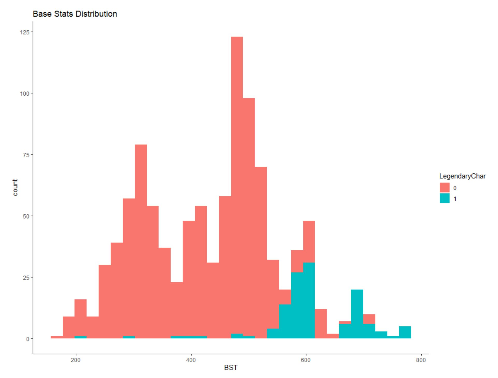

My Projects
Restaurant Inspection Data Analysis
The project used the New York City RestaurantInspection Results from the New York City Department of Health and Mental Hygiene (DOHMH). We aimed to explore the restaurant violation rates, patterns and reasons so that we could make suggestions. The dataset contains every sustained or not yet adjudicated violation citation from every full or special program inspection conducted up to six years before the most recent inspection for restaurants and college cafeterias in an active status.
Click here or the picture to view the project report.

Hotel Industry Analysis
The overall objective of this group project is to assess the performance of the two European Hotel Group hotels located in the city and the resort during 2015-2017.The performance of each property underwent a series of structured assessments. Overall performance of the two hotels was compared and reported, performance-related factors were identified, future revenue predictions were made as well as recommendations on both hotels were suggested based on current data.
Click here or the picture to view the project report.
Click here to view the project code.

Machine Learning Project: Finding Legendary Pokémon
The dataset that was used for this project was from a Pokémon RPG game published by Nintendo in 1996. Since Pokémon video games are ability-based, and legendary pokémon normally have the best abilities; hence, we are interested in finding those legendary pokémon and how all pokémon’s abilities, types, and stats, etc. are correlated or related to whether they are legendaries or not.
Click here or the picture to view the project report.
Click here to view the project code.
Information Visualization Project: Starbucks Food & Drinks Nutrition Facts Visualizations
The American Heart Association recommends no more than 25 grams of added sugar a day for women and 36 grams for men. But do you know that one large salted caramel hot chocolate contains almost 90 grams of sugar? I used two datasets that include the nutritional information for Starbucks’ food and drink menu items until 2019 to create some viusalizations about both general nutrition facts, nutrition facts correlations, and nutrition facts rankings.
Click here or the picture to view the poster.
Click here to view the code.
News Articles Sentiment Analysis and Topic Modeling
In this project, we gathered data from three new sites which are Breitbart News, Fox News, and Newsmax. All three news media companies deliver their news to the same target public. The project focused on how these news sites shift main topics over time and the similarities or differences in topic selection during the same period of time for these news media companies since they target the same audiences.
Click here or the picture to view the project report.